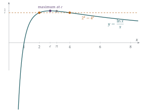

Find the value of \(m\) for which the line \(y = mx\) touches the curve \(y = \ln x\).
If instead the line intersects the curve when \(x = a\) and \(x = b\), where \(a < b\), show that \(a^b = b^a\). Show by means of a sketch that \(a < \mathrm{e} < b\).
The line \(y = mx + c\), where \(c > 0\), intersects the curve \(y = \ln x\) when \(x = p\) and \(x = q\), where \(p < q\). Show by means of a sketch, or otherwise, that \(p^q > q^p\).
Show by means of a sketch that the straight line through the points \((p, \ln p)\) and \((q, \ln q)\), where \(\mathrm{e} \leq p < q\), intersects the \(y\)-axis at a positive value of \(y\). Which is greater, \(\pi^{\mathrm{e}}\) or \(\mathrm{e}^{\pi}\)?
Show, using a sketch or otherwise, that if \(0 < p < q\) and \(\dfrac{\ln q - \ln p}{q - p} = \mathrm{e}^{-1}\), then \(q^p > p^q\).
The hook
Which is bigger, \(\pi^e\) or \(e^\pi\)? Your calculator will tell you in a second: \(e^\pi \approx 23.14\) and \(\pi^e \approx 22.46\). But a calculator only tells you that; it does not tell you why, and it cannot help with infinitely many similar questions at once. Is \(3^\pi\) bigger than \(\pi^3\)? Are there any whole numbers with \(n^m = m^n\) apart from the obvious \(n = m\)?
All these questions turn out to be about a single curve, \(y = \ln x\), and the straight lines that cross it. This question shows how a sketch, used carefully, can settle comparisons that look hopeless by algebra, and how the number \(e\) emerges as the natural dividing point.
Before you start
Taking logarithms, \(a^b = b^a\) is the same as \(b\ln a = a\ln b\). Rearrange this so that \(a\) appears only on one side and \(b\) only on the other.
\(b\ln a = a\ln b\) is the same as \[\frac{\ln a}{a} = \frac{\ln b}{b}.\] So every comparison of \(a^b\) with \(b^a\) is a comparison of the values of the single function \(h(x) = \frac{\ln x}{x}\) at \(a\) and \(b\). And \(\frac{\ln a}{a}\) is the gradient of the line from the origin to the point \((a, \ln a)\) on the curve \(y = \ln x\). That is why the question is about lines.
Working it through
Stage 1 The tangent through the origin
If \(y = mx\) touches \(y = \ln x\) at \(x = x_0\), what two equations must hold?
The line and curve must meet, \(mx_0 = \ln x_0\), and have the same gradient, \(m = 1/x_0\). Substituting the second into the first, \(1 = \ln x_0\), so \(x_0 = e\) and \(m = 1/e\). The tangent from the origin touches the curve at \((e, 1)\).
If instead \(y = mx\) crosses the curve at \(x = a\) and \(x = b\), then \(\ln a = ma\) and \(\ln b = mb\), so \(\frac{\ln a}{a} = m = \frac{\ln b}{b}\), which gives \(b\ln a = a\ln b\) and hence \(a^b = b^a\).■
For the sketch: a line through the origin that is slightly less steep than the tangent cuts the curve twice, once on each side of the point of tangency, so \(a < e < b\). Lines steeper than \(1/e\) miss the curve altogether, because \(\ln x\) is concave and lies entirely below its tangent \(y = x/e\).
Stage 2 Lines that cut the \(y\)-axis above the origin
Now the line is \(y = mx + c\) with \(c > 0\). What are \(\frac{\ln p}{p}\) and \(\frac{\ln q}{q}\) in terms of \(m\) and \(c\)?
From \(\ln p = mp + c\) and \(\ln q = mq + c\), \[\frac{\ln p}{p} = m + \frac{c}{p}, \qquad \frac{\ln q}{q} = m + \frac{c}{q}.\] Since \(c > 0\) and \(p < q\), \(\frac{c}{p} > \frac{c}{q}\), so \(\frac{\ln p}{p} > \frac{\ln q}{q}\). Multiplying by \(pq > 0\) gives \(q\ln p > p\ln q\), so \(p^q > q^p\).■
Geometrically: from the origin, the point \((p, \ln p)\) is seen at a steeper angle than \((q, \ln q)\) when the line through them crosses the \(y\)-axis above the origin.
Stage 3 Chords to the right of \(e\)
The chord from \((p, \ln p)\) to \((q, \ln q)\), with \(e \leq p < q\), has gradient less than the gradient of the curve at \(p\). Why? And why does that make its \(y\)-intercept positive?
Because \(\ln x\) is concave, its gradient \(1/x\) decreases, so the chord from \(p\) to \(q\) is less steep than the tangent at \(p\): its gradient \(s\) satisfies \(s < \frac1p\). The chord’s \(y\)-intercept is \[c = \ln p - sp > \ln p - \frac{1}{p} \cdot p = \ln p - 1 \geq 0,\] using \(p \geq e\). So the chord crosses the \(y\)-axis above the origin.■
Use this, and Stage 2, to decide which is greater, \(\pi^e\) or \(e^\pi\).
Take \(p = e\) and \(q = \pi\). The chord between them has a positive intercept, so by Stage 2, \(p^q > q^p\): that is, \[e^\pi > \pi^e.\]
Stage 4 Chords parallel to the tangent
Now suppose the chord from \(p\) to \(q\) has gradient exactly \(\frac1e\), the same as the tangent \(y = \frac{x}{e}\).
The chord is parallel to the tangent at \((e, 1)\). Since \(\ln x\) is concave, the curve lies below that tangent. Does the chord cut the \(y\)-axis above or below the origin?
The chord is the line \(y = \frac{x}{e} + c\) for some \(c\). Its endpoints lie on the curve, which lies on or below the tangent \(y = \frac{x}{e}\), and touches it only at \(x = e\). The endpoints cannot both be at \(x = e\), so at least one lies strictly below the tangent, and therefore the whole parallel chord lies below the tangent: \(c < 0\). Now repeat Stage 2 with \(c < 0\): the inequality reverses, \(\frac{\ln p}{p} < \frac{\ln q}{q}\), and so \(q^p > p^q\).■
Looking back
Reduce to one function. Comparing \(a^b\) with \(b^a\) became comparing \(h(a)\) with \(h(b)\), where \(h(x) = \frac{\ln x}{x}\).
A sketch with reasons. Each “by means of a sketch” was backed up by a precise fact: concavity of \(\ln\) (chords below the curve, tangents above it) and the sign of an intercept.
The special role of \(e\). The tangent from the origin touches at \(x = e\), and that is the dividing point for all of these comparisons.
What’s really going on
Everything in this question is visible in the graph of \(h(x) = \frac{\ln x}{x}\) (Figure 3.5.1). Its derivative is \(h'(x) = \frac{1 - \ln x}{x^2}\), so \(h\) increases on \((0, e)\), reaches its maximum \(\frac1e\) at \(x = e\), and then decreases towards \(0\). A horizontal line at height \(m\) between \(0\) and \(\frac1e\) cuts the graph twice, at points \(a < e < b\) with \(h(a) = h(b)\), which is exactly \(a^b = b^a\). To the right of \(e\), \(h\) is decreasing, so for \(e \leq p < q\) we have \(h(p) > h(q)\), that is, \(p^q > q^p\). In particular \(e^\pi > \pi^e\), and more generally \(e^x > x^e\) for every \(x \neq e\): no other number beats \(e\) at this game.

All solutions of \(x^y = y^x\)
Which pairs of distinct positive reals satisfy \(x^y = y^x\)? A neat trick finds them all. Put \(y = tx\) with \(t > 1\); then \(x^{tx} = (tx)^x\) gives \(x^t = tx\), so \(x^{t-1} = t\) and \[x = t^{1/(t-1)}, \qquad y = t^{t/(t-1)}.\] Writing \(t = 1 + \frac1n\) gives \(x = \left(1 + \frac1n\right)^n\) and \(y = \left(1 + \frac1n\right)^{n+1}\). With \(n = 1\) this is \((2, 4)\); with \(n = 2\) it is \(\left(\frac94, \frac{27}{8}\right)\), and indeed \(\left(\frac94\right)^{27/8} = \left(\frac{27}{8}\right)^{9/4}\). As \(n \to \infty\) both tend to \(e\), the point where the two branches meet. The problem was discussed in letters between Daniel Bernoulli and Christian Goldbach in 1728, and later by Euler.
The most economical base
The function \(x^{1/x} = e^{h(x)}\) is also maximised at \(x = e\). This answers a curious question: if the “cost” of a number system is the base times the number of digits needed, the most economical base is \(e\), and among whole numbers, \(3\) (narrowly beating \(2\)). A few experimental computers, such as the Soviet Setun of 1958, have used base \(3\).
The thinking skill
An inequality or equation involving two quantities in a tangled way often becomes a statement about one function evaluated at two points.
Once you have that function, its graph (where it increases, decreases and peaks) answers every question at once. Here \(a^b\) versus \(b^a\) became \(h(a)\) versus \(h(b)\).
Try this next
Whole numbers. (From STEP I, 1988.) Use the graph of \(h(x) = \frac{\ln x}{x}\) to find all pairs of distinct positive integers \(m\) and \(n\) with \(n^m = m^n\).
More comparisons. (From STEP II, 2025.) Use the graph to show that \(3^\pi > \pi^3\), and that \(\left(\frac94\right)^{\sqrt5} > \sqrt5^{\,9/4}\). Given that \(1 < x < 2\), decide which is larger, \(x^{x+2}\) or \((x+2)^x\). (Hint: \(h(2) = h(4)\).)
Using \(e^2 < 8\). (From STEP II, 2025.) Show that \(9^{\sqrt2} > \sqrt2^{\,9}\) and \(3^{2\sqrt2} > (2\sqrt2)^3\) are equivalent. Given that \(e^2 < 8\), decide which of \(9^{\sqrt2}\) and \(\sqrt2^{\,9}\) is larger.
A one-line proof. Use \(e^x > 1 + x\) for \(x \neq 0\), with \(x = \frac{\pi}{e} - 1\), to prove \(e^\pi > \pi^e\) directly.
Further reading
Eli Maor, e: The Story of a Number (Princeton University Press). The history of \(e\), including the equation \(x^y = y^x\).
Paul Nahin, An Imaginary Tale (Princeton University Press). Not only about \(\sqrt{-1}\): full of curious calculations of exactly this kind.
Michael Spivak, Calculus (Cambridge University Press). Chapter 11 covers the use of derivatives to understand the shape of graphs with complete rigour.